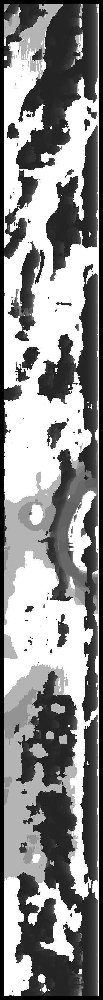
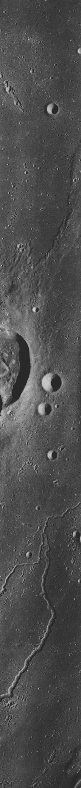
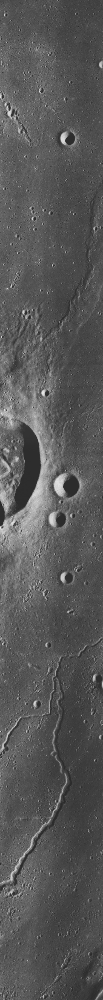

Computer Vision Project 3: Stereo Depth Estimation
Goal:
Write a program that takes as input a rectified stereo pair, and creates a depth map of the scene, (where each pixel is color coded by your estimate of the depth). Compute the depth map for many different window sizes (ie, 3x3, 5x5, 9x9, 15x15, 21x21, 31x31), and try different heuristic rules to combine the resulting depth maps into one final answer. One challenge is images that have large blank regions; develop some other heuristics or rules to "guess" what the best correspondence is for these large regions.Intro
In stereo matching, we find correspondences between input images. Generally, we determine correspondence between two points by inspecting the pixel neighborhood N around both points. I then select the pairing that has the lowest sum of absolute differences as a corresponding point pair. In practice, a matching block is located for each pixel in an image. The relative difference in the location of the points on the image planes is the disparity of that point. Due to the assumption of being constrained into a 1-dimensional search space, these disparities can be represented as a 2D disparity map which is the same size as the image.Assumptions
Constrain problem into 1-dimensional search space means I can model disparities as a 2D disparity map I assume that disparity of a point is closely related to the depth of the point.Dataset:
I found pairs of rectified stereo images (that were not evaluation sets) here, from the "Indoor", "Outdoor", and "Office" datasets. The datasets were created by Dr. Stefano Mattoccia of the University of Bologna.
Sample Images
left image |
right image |
left image |
right image |
Implementation:
Big idea: find pixel-by-pixel correspondence from sum of absolute differences
Extension: images with blank regions
Results
depth map |
left image |
right image |